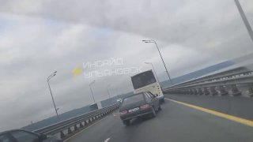

Делитесь в комментариях, по каким улицам перебои с электроэнергией.
НовостьПо данным источника


На фото и видео виден уровень воды, и как она подмывает грунт на стройплощадке. Каждый раз одно и то же.…


Ингредиенты: • Баклажаны — 2 шт. • Помидоры черри — 200 г. • Красный лук — 1 шт. • Чеснок — 2 зубчика • Оливковое масло — 3 ст. л.…

Глава города Сергей Сандрюков сообщил, что в этом году работы охватывают 37 дворов, 18 дорог, пять тротуаров и подъездные пути к трём СНТ.…


Им указывают, как жить, как выглядеть, когда рожать. Это ненормально.…

Лабораторные анализы показали превышение допустимого уровня в 2,8 раза.…

По словам собачников, российскую вакцину им рекомендовали ветеринары.…


Услышим биографию группы, историю создания альбомов, а также после послушаем их на виниле с бокалом вкусного крафта!…

В ближайшие недели тюльпаны посадят на семи цветниках — весной они расцветут на 720 кв. м.…

Обновляем проезды, тротуары, ливневки, заездные карманы, площадки под мусорные контейнеры.…

Прошу вас обязательно реализовать своё конституционное право, принять обдуманное, ответственное решение, чтобы результаты выборов подтвердили зрелость и стойкость российского общества.…

Не так давно в местных сообществах бурно обсуждали посадки саженцев сосен в Березовой роще депутатом Городской думы.…

Одна дорога и для пешеходов, и для машин. У ворот Пенсионного такая же картина. Пенсионеров жаль, особенно инвалидов», — пишет наша подписчица.…

Мошенники заявили о переводе недостающих 126 млн рублей, но деньги оказались фейковыми — их нельзя обналичить.…

Кормим, аппетит хороший, единственно обрабатываю из далека перекисью водорода, мухи его замучили.…

Похоже, команда Ким решила, что победа сама упадёт в руки: в Госдуме у неё проходное место, значит, достаточно собрать деньги, поделить бюджет и составить отчёт.…

Проект появился еще в 2014 году, но больше десяти лет фактически не двигался.…


Проблема заключалась в отсутствии сведений о заключении им контракта по месту жительства.…

Всё прошло успешно, пациентка готовится к выписке. Клапан вводят через прокол в бедренной артерии, без разреза груди и долгого восстановления.…

Именно с этой партией ветеринары и владельцы связывали массовую гибель сотен домашних питомцев по всей стране.…

В селе Соловчиха Радищевского района 50-летняя женщина пришла к соседке и поссорилась с ней у дома.…

В Ульяновске будут работать 260 избирательных участков. Чтобы быстро и удобно проголосовать, лучше заранее узнать, где находится ваш участок.…

Площади лесовосстановления в регионе ежегодно увеличиваются, а количество пожаров уверенно идет на спад.…

Отличный вариант для отдыха всей семьёй — ярко, громко и безопасно для впечатлений!…

Сейчас их родители могут столкнуться с уголовным преследованием.…

Путин попросил россиян обязательно прийти на выборы, принять ответственное решение, чтобы их результаты подтвердили зрелость общества.…

Жители Донбасса и Новороссии впервые после воссоединения с Россией будут выбирать депутатов Государственной Думы.…

64-летний житель Москвы потерял 54 тысячи рублей, пытаясь купить швейную машину в интернет-магазине, который был ликвидирован ещё в 2013 году.…

Столь масштабное голосование проводится в условиях специальной военной операции — Жители Донбасса и Новороссии впервые после воссоединения с Россией будут выбирать депутатов Госдумы — Мы знаем, за что сражается страна и в чем заключается долг каждого.…

Перелёты через Северный полюс, рекорды дальности и высоты, культ лётчиков в СССР.…

Ульяновские силовики пресекли деятельность организованной группы, занимавшейся мошенничеством с кредитами и фиктивными заявлениями.

Ничего по этому фильтру в ленте нет — показать все материалы.
Возник 13.09, пик 13.09 — сюжет держали 4 источника. Полная дуга — в недельнике.